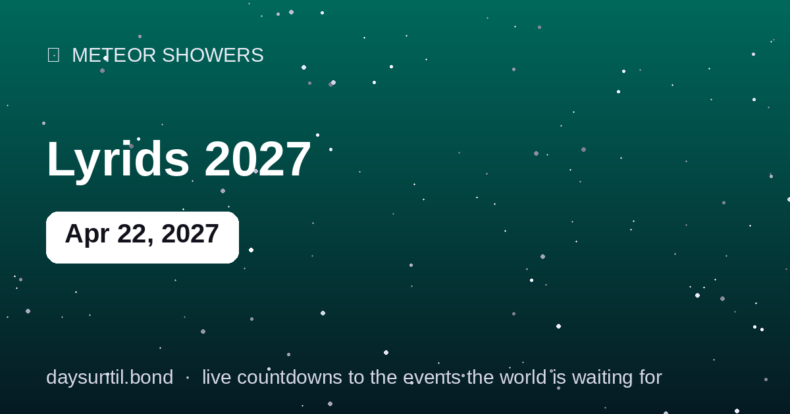

How Many Days Until Lyrids 2027?
Lyrids 2027 falls on Thursday, April 22, 2027.
As of November 21, 2026: 152 days to go — 21 weeks and 5 days, 109 weekdays (43 weekend days), about 3,648 hours.

Quick facts
| Peak night | April 22–23, 2027 |
|---|---|
| Best viewing | After midnight to pre-dawn |
| Equipment | None — naked eye only |
About Lyrids 2027
The Lyrids meteor shower peaks on the night of April 22, 2027 (April 22/23). April's classic: a shower with 2,700 years of recorded observations, known for occasional bright fireballs. Peak ~18 meteors/hour under dark skies.
Best practice for any meteor shower: dark sky, no telescope, eyes adjusted for 30 minutes, look halfway up toward the radiant's constellation. The counter above runs to the peak night; meteors are visible several nights either side.
Your Lyrids 2027 countdown milestones
It is easier to plan against fixed points than against a number that moves. These are the dates on which the countdown to Lyrids 2027 passes each marker between now and the day itself — the last one falls on Wednesday 21 April, when there will be 1 day left.
| Milestone | Day | Date | Remaining |
|---|---|---|---|
| 100 days | Tuesday | 12 January 2027 | 100 days to go |
| 50 days | Wednesday | 03 March 2027 | 50 days to go |
| 30 days | Tuesday | 23 March 2027 | 30 days to go |
| 14 days | Thursday | 08 April 2027 | 14 days to go |
| 7 days | Thursday | 15 April 2027 | 7 days to go |
| 3 days | Monday | 19 April 2027 | 3 days to go |
| 1 days | Wednesday | 21 April 2027 | 1 day to go |
How the remaining time breaks down
152 days is the headline, but it is rarely the number that helps. 109 of those are weekdays and 43 fall on a weekend, which is the split that matters if you are planning around work. It is 21 weeks and 5 days, or roughly 5.0 months, or about 3,648 hours.
| Unit | Until Lyrids 2027 |
|---|---|
| Days | 152 |
| Weeks | 21 weeks and 5 days |
| Months (approx) | 5.0 |
| Weekdays | 109 |
| Weekend days | 43 |
| Hours | 3,648 |
| Sleeps | 152 |
Working days are Monday to Friday and do not subtract public holidays, which vary by country and employer — the full month-by-month split is on our weekday page for Lyrids 2027.